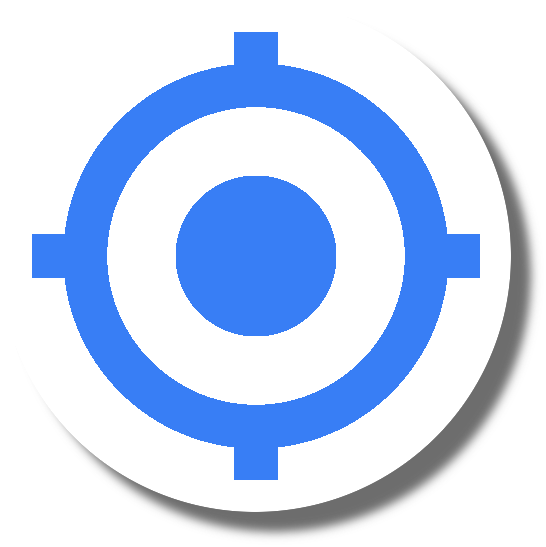
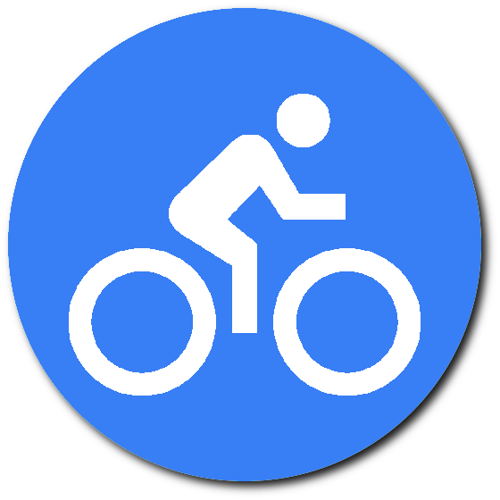
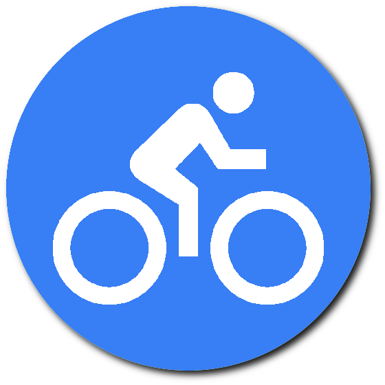
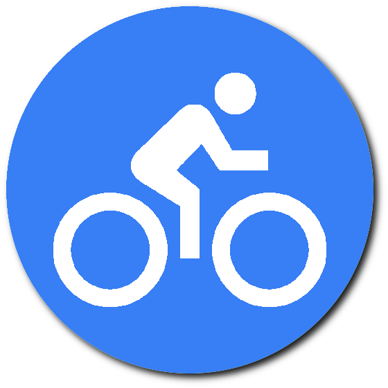
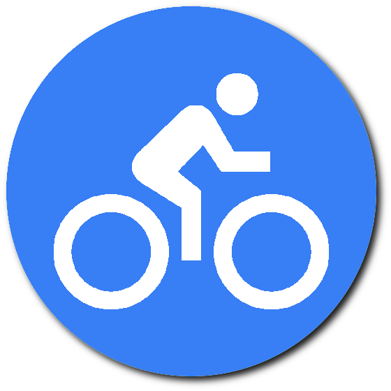
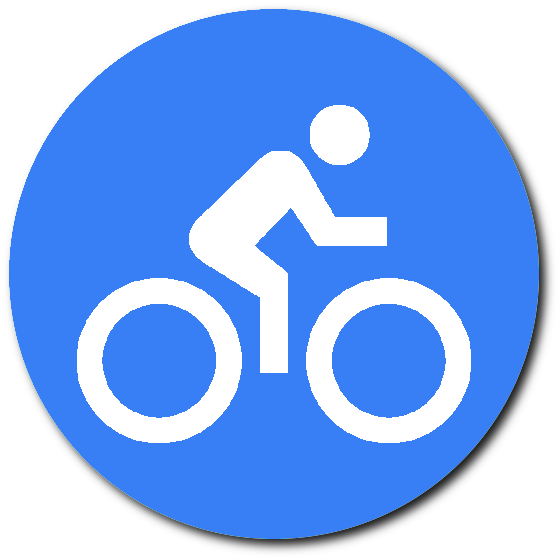

{{Titre_Recommandation}}
Définir un trajet
Départ à :
{{heure_choisie}} : {{minute_choisie}}
Valider
Station de Vélib la plus proche à : {{donneesVelibPlusProche.distance.value}} m ({{donneesVelibPlusProche.duration.text}})


 


